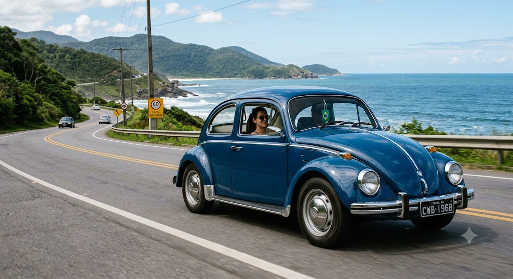

O carro mais vendido da história em uma única plataforma
Por: Valdiele Andrade
O lendário Volkswagen Fusca segurou por décadas o título de carro produzido por mais tempo sobre o mesmo projeto básico, somando mais de 21 milhões de unidades fabricadas ao redor do mundo.
Fonte: Quatro Rodas